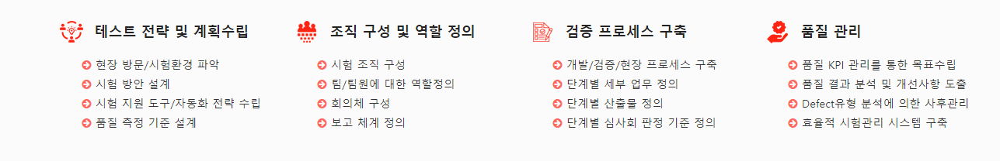
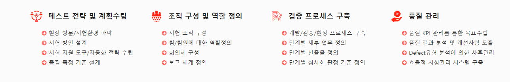

Software Defined Network


IT Infra structure Service

Software Quality Assurance

네트워크 구성에 필요한 서버 및 스위치 장비들에 대한 신속한 지원 및 제공 가능

NOS, SDN, 가상화 및 Cloud Orchestration을 위한 개방형 소프트웨어를 이용하여 디자인이 완전히 오픈 소스인 네트워킹 하드웨어를 기반으로 합니다. 네트워크 용량 및 서비스에 대해 자동적이고, 신속한 프로비저닝이 가능합니다.

서버 제조업체는 섀시 및 마더 보드를 구축하고 CPU, 메모리 및 스토리지를 추가하여 White Box Server를 만들 수 있습니다.

SD-WAN은 SDN(Software-Defined Networking)을 기반으로 각 네트워크 구성요소를 추상화하여 WAN을 구성합니다.


NS / VNF의 Lifecycle 관리, Resource 관리, Package On-boarding 등의 역할을 수행합니다.
통합관제, ITAM/ITSM, NMS, TPMS 서비스를 통해 사용자들에게 수준 높은 서비스 제공 가능

IT 자산에 대해 도입부터 폐기까지 체계적으로 Lifecycle을 관리하며, 자산의 재무정보 및 투자 시기를 종합 관리하여 불필요한 비용을 줄이고 장기적인 운영계획을 수립하도록 관리합니다.

IT 자산에 대해 도입부터 폐기까지 체계적으로 Lifecycle을 관리하며, 자산의 재무정보 및 투자 시기를 종합 관리하여 불필요한 비용을 줄이고 장기적인 운영계획을 수립하도록 관리합니다.

TPMS는 소프트웨어의 품질관리를 위해 사전에 수동 또는 자동적으로 설계된 테스팅 프로세스를 통해 테스트를 관리하는 시스템입니다.

NMS는 서버, 네트워크, DBMS, 부대설비와 같은 다양한 IT 인프라를 하나의 플랫폼에서 통합 관리하는 시스템입니다.
제품 품질수준 확보를 위한 단계별 프로세스 정립 및 절차를 통한 품질향상에 기여 가능
 
